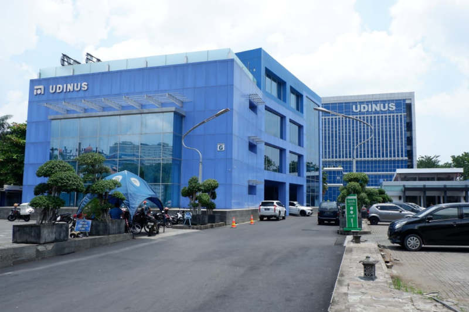
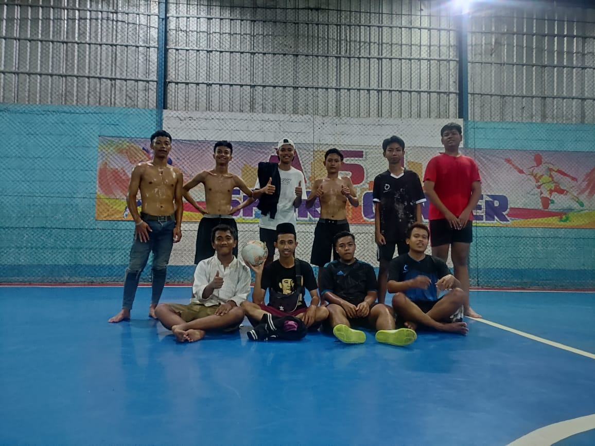
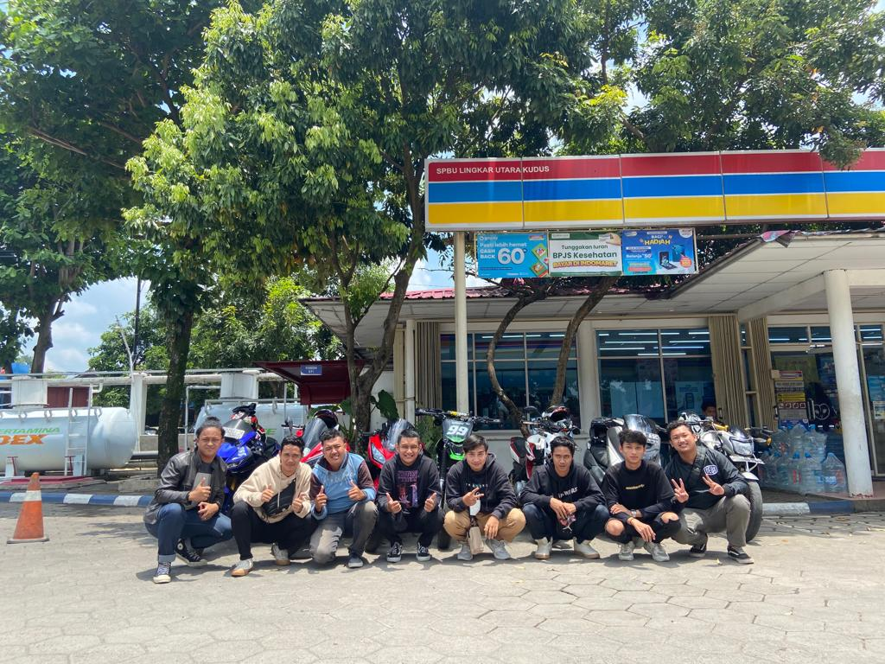

Kuliah

Pada tahun 1986, didirikan sebuah lembaga kursus komputer IMKA yang berlokasi di kota Semarang. Karena kegigihannya dalam membuka dan menciptakan peluang pasar serta ketahanannya dalam menghadapi berbagai rintangan, IMKA berhasil tumbuh dan berkembang serta menyebar ke beberapa kota besar di Pulau Jawa, seperti Semarang, Surakarta, Yogyakarta, Surabaya, Bandung dan Jakarta.
Ahli-ahli komputer dari IMKA ditambah sekelompok ilmuwan kemudian mendirikan Yayasan Dian Nuswantoro. Berdasarkan SK Mendikbud No. 0686/O/1990 tanggal 12 Desember 1990 Yayasan ini diperkenankan menyelenggarakan Akademi Manajemen Informatika dan Komputer Dian Nuswantoro yang dikenal dengan nama AMIK Dian Nuswantoro. Kuliah pertamanya diikuti oleh 54 Mahasiswa. Kemudian pada 3 Maret 1994 AMIK Dian Nuswantoro secara resmi berubah bentuk menjadi Sekolah Tinggi Manajemen Informatika dan Komputer (STMIK) Dian Nuswantoro.
1. Futsal

futsal adalah salah satu hobi yang saya sukai karena saat bermain memerlukan aktivitas badan yang sangat tinggi dan juga bagus untuk tubuh sehingga menjadi bugar.
tempat yang nyaman dan juga pemain yang cukup sedikit membuat saya leluasa untuk mengasah skill dalam mengollah kulit bundar tersebut.
main bersama teman-teman juga dapat menghibur saya dikala waktu yang padat.
2. Montoran

sunmori dan night ride juga salah satu hal yang saya sukai karena dunia otomotif juga sangatlah luas.
dapat mengendarai montor dengan teman-teman sambil menikmani suasana saat perjalanan memiliki makna yang berbeda buat saya.
dari sini bisa mendapatkan relasi juga.
1. Bakso

makanan salah satu ini adalah makanan favorit saya karena rasanya yang enak dan juga pentolnya yang saat dikunyah penuh dengan daging.
saking saya suka bakso, saya punya tempat langganan untuk membelinya dan juga bisa membedakan mana bakso yang enak atau tidak.
Belajar

selain dari pembelajaran dari kampus dan juga kewajiban saya membantu orang tua saya juga suka belajar dicoding.
karena dapat berkreasi dan mendapatkan banyak benefit.